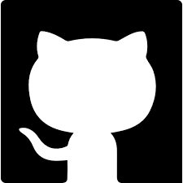

Coses sobre mi
Hola sòc el Jaume Pont
M'han agradat els videojocs tota la vida, i des de fa anys m'ha interessat el tema de com es fan, principalment com és programen,
per lo que vaig decidir començar un grau superior de disseny de aplicacions enfocat en els videojocs amb les esperançes
de algún dia treballr per alguna gran companyia de videojocs o de anar fent els meus propis jocs i començar una petita empresa de videojocs pe'l meu compte, encara no n'estic segur.
El meu lema és, si pots acabar la feina en 20 minuts, no treballis una hora.
Els meus estudis i habilitats
He fet, a part de la ESO, un grau mitjà de mecanització, on he aprés modelatge i disseny en 2 i 3 dimensions utilitzant autocad,i programació bàsica en java en el Institut Guindàvols de Lleida.
Ara estic fent els estudis de DAM a La Salle Mollerussa, i gràcies a això he adquirit vàris coneixements en programació, com en Java,Php,Html i algo de c sharp, també he millorat les meves habilitats
en grafisme i disseny en 3 Dimensions gràcies al Blende i retoc de imatges amb el hpotoshop.A part de Això, he aprés a fer jocs des de zero amb el Unity(Des del disseny, a parts de grafisme i sobre tot en la programació. )
També he fet base de dades a primer curs per lo que tinc algo de coneixements bàsics en SQL i MongoDb.


PROJECTES
En les assignatures tant de videojocs com de disseny, vaig fer vàris projectes durant el primer curs, alguns de ells són aquests:
Projectes de Blender:
En blender vaig fer vàris projectes, tot un petit mapa en low poli, tot el logo animat del 20th century fox, una petita cafetera ben detallada i una recreació a escala real de la meva antiga habitació amb textures.
.png)
.png)
Projectes de Videojocs:
En videojocs, durant el primer any vaig fer alguns projectes, els dos més "destacats" serien una copia del mario bros original, i una del pac-man, i després ara a segon any estic començant com a primer projecte ja un shooter fet a mà el qual encara no està del tot acabat
CONTACTA'M
Les meves dades de contacte:
Teléfon:
 605 86 90 53
605 86 90 53
Correu:
 jaumepontm@gmail.com
jaumepontm@gmail.com
Github:
 El meu github